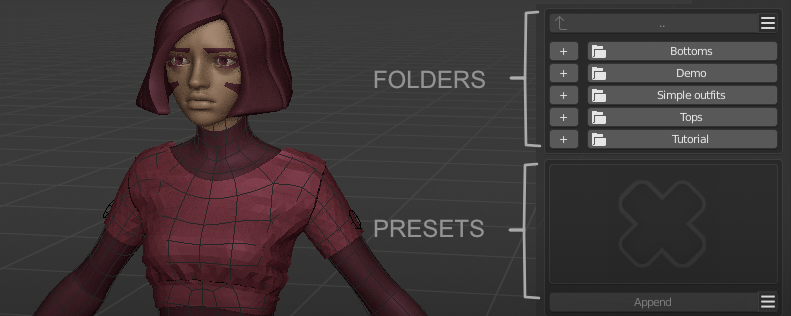

Garments Library#
Garments Library gives you option to store whole garments into presets that are grouped in categories (folders).
Top half is responsible for managing categories (folders), bottom for managing presets (files inside folder)

Library location#
User Preferences -> Add ons -> Garment Tool -> Library tab.
Select target folder where library should be located:

[☰] Categories menu#
- Add, Delete, Rename category (folder)
Note - Renaming and Deleting categories requires selecting target folder with '+' button next to the category name.
[☰] Presets menu#
- Add, Delete, Rename, Open active preset (the one that is currently displayed with thumbnail).
Storing presets#
To store preset use presets [☰] menu ->'Store Preset'. You can store multiple garments to one preset. For that just shift select garments names you want to save, and type in merged preset name. Then you will be asked to select 3D Viewport area, that will be used for generating thumbnail. For that just Left click and drag rectangular shape in 3D Viewport around place that will be used as thumbnail. Then press enter.